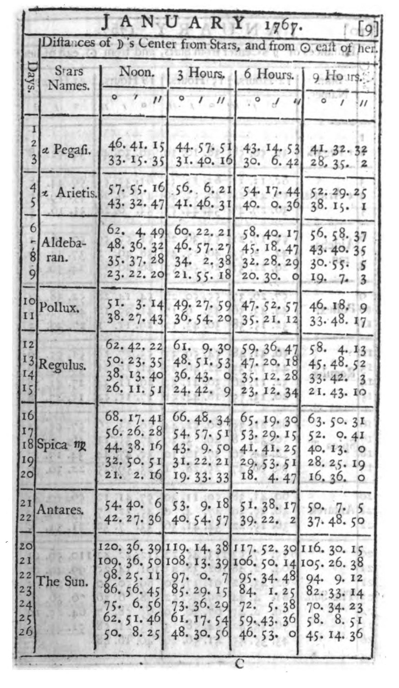
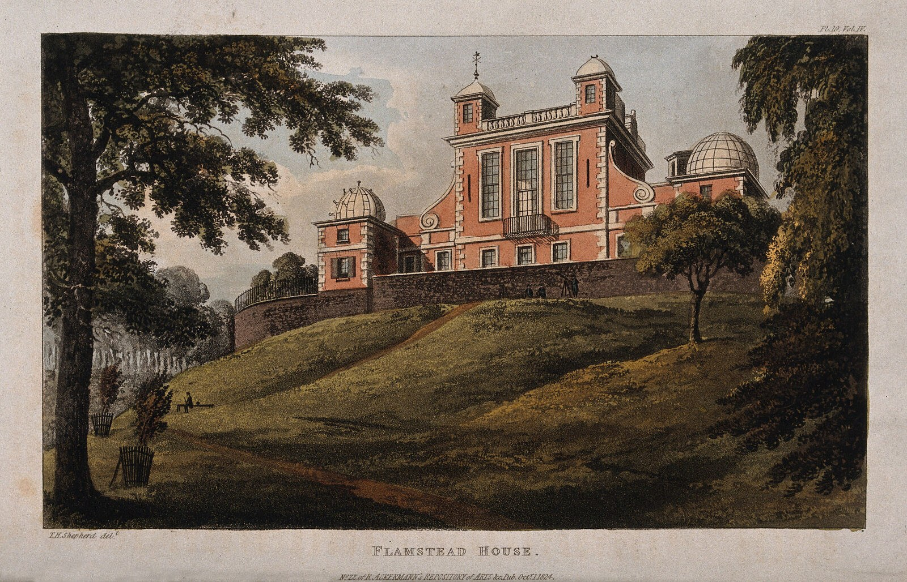
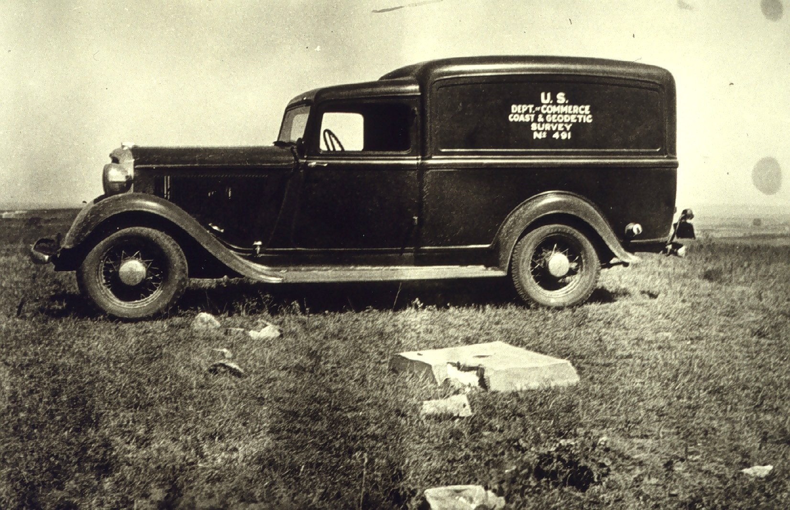
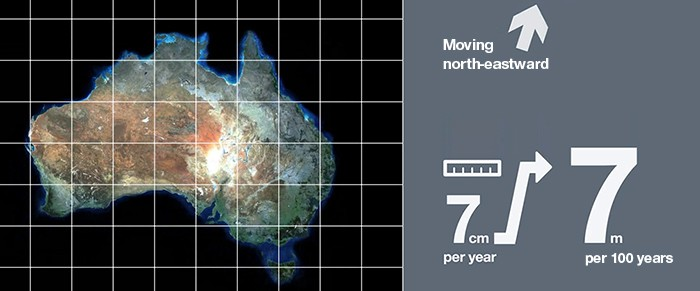

File 003
Latitude, Longitude and the Datum Problem
The same pair of coordinates can point to places hundreds of meters apart. The moon’s tables, a vote in Washington, a pasture in Kansas, and satellites each helped decide where coordinates begin, and their choices are still in the data.
Visitors to the Royal Observatory in Greenwich, London, can stand on the Prime Meridian, a line set into the courtyard that marks zero degrees of longitude. If they check the coordinates on their phones, they find they are not at zero. A 2015 paper by five scientists in the Journal of Geodesy worked out that they would have to walk about 102 meters east before their phones read zero longitude.1 The obvious guess is that Britain has drifted since Greenwich was chosen in 1884. It has, but only by a few meters, and nobody has moved the line.1
Small as it is, that gap points to a problem anyone who combines maps eventually meets. File 002, How Humans Learned to Measure the Earth, told how people learned the size and shape of the Earth model used to measure latitude and longitude. The numbers also depend on where that model is pinned to the real Earth, and on where longitude starts. A pair of coordinates names a place only within a particular datum. The datum defines how the mathematical model of the Earth is positioned and oriented relative to the real one. Until satellites, most countries set up their own, each from a starting point it chose. Expressed in two different datums, the same pair of numbers can land anywhere from across the street to several blocks apart, which is one reason two map layers of the same street sometimes refuse to line up.
Longitude was a question of time
Latitude has a natural zero, the equator, and the stars give it to anyone who can measure an angle. Longitude has no natural zero, and it has to be measured with a clock. The Earth rotates 15° in an hour, so the difference between local time and the time at some other place is a difference in longitude. If the sun is at its highest where you are, which makes it local noon, and a clock still set to the time at home says 3 p.m., you are 3 hours behind home, or 45° west of it.
On land, astronomers could compare times by watching the same event in the sky, such as the eclipse of one of Jupiter’s moons. At sea, a ship needed a clock that kept home time for weeks, and no clock could. In 1714 Isaac Newton told a committee of the House of Commons that such a watch “hath not yet been made,” because of “the Motion of a Ship, the Variation of Heat and Cold, Wet and Dry, and the Difference of Gravity in different Latitudes.”2 Parliament’s Longitude Act that year offered £20,000 for a method that found longitude to within half a degree.3
The clockmaker John Harrison built such a watch. After a trial voyage to Barbados in 1764, the Board of Longitude, the commissioners who judged the prize, agreed that his watch, H4, had kept time within the Act’s strictest limit. It would not certify him as the winner until he showed how the watch was made.4 A good clock told a navigator his longitude relative to the place whose time it kept. It did not say which place that should be.
The rival method used the moon as a clock. The moon moves against the stars fast enough that the angle between it and a bright star, measured from the deck, tells the time at any place for which those angles have been worked out in advance. Nevil Maskelyne, the Astronomer Royal, made the method practical with the first Nautical Almanac, for the year 1767 (Fig. 1). Most of its tables, the lunar distances among them, were “computed by Two separate Persons, and examined by a Third,” and “all the Calculations are made according to apparent Time by the Meridian of the Royal Observatory at Greenwich.”5 A navigator who used the tables found Greenwich time, and so counted longitude from Greenwich.


Greenwich became zero by a vote
Other countries kept their own zeros. By the 1880s, maps and charts counted longitude from Paris, Cádiz, Lisbon, and several other observatories, so a longitude meant little until you knew which zero it was counted from.6
In October 1884 delegates from more than 20 nations met in Washington, D.C. A table of the world’s shipping presented there showed that ships using charts counted from Greenwich carried 72% of the world’s tonnage. The delegates voted to propose a single zero of longitude to their governments, the meridian through Airy’s transit circle at the Royal Observatory (Fig. 2). Only San Domingo (the Dominican Republic) voted against, and France and Brazil abstained.6


A meridian is a flat plane that slices the Earth from pole to pole, and the zero meridian is the one that runs through that instrument. George Airy had installed the transit circle at the observatory a generation earlier. It is a telescope that turns only in the north–south plane, so its observers could time each star as it crossed the meridian.1 The conference recommended a zero for longitude. Contrary to a common story, it did not create time zones.6
France kept its own zero at Paris. Paris lies east of Greenwich, so its clocks ran about 9 minutes ahead. In 1911 France adopted Greenwich time, in a law that never mentions Greenwich. It set the legal time of France as “Paris mean time, set back by nine minutes twenty-one seconds.”7
A continent was pinned to a pasture in Kansas
A shared zero told every country where to start counting longitude. It did not say where each country’s Earth model sat on the ground. In the United States the answer was a pasture ridge at Meades Ranch, in Osborne County, Kansas (Fig. 3). Surveyors of the US Coast and Geodetic Survey had marked a triangulation station there in 1891. Under a marble post they buried the station’s underground mark, the part meant to survive if anyone disturbed the post. Like the marks at many of the Survey’s stations in Kansas, it was “a bottle filled with ashes.”8 In 1901 the Survey defined its national datum by this station’s coordinates, and the North American Datum of 1927 kept them.8,9


For the old datums, a starting point and a direction fixed the model in place. Surveyors chose an ellipsoid, the Earth model from File 002, and gave the starting point its latitude and longitude. They also fixed the direction from the starting point to a neighboring station, which set how the model was turned. Every other station in the network took its coordinates from triangles measured outward from the start. The model the US used was the Clarke ellipsoid, which File 002 named near its end.8,9
Starting coordinates came from the stars, measured with instruments leveled by gravity. A plumb line hangs along the local pull of gravity, and mountains and uneven rock tilt that pull very slightly, as File 002 described, so any single sighting carries a small tilt of its own. The Survey did not rely on one spot. Its coordinates for Meades Ranch had not been measured from the stars in Kansas. Instead, they were carried there through the chain of triangles from a station in Maryland, whose position combined more than a hundred astronomical observations.9,10 A check against hundreds of stations across the country then showed that the datum came close to the best fit for the United States.8
A good fit to one country was also the limit. Geodesy for the Layman, a handbook of the Defense Mapping Agency, says of the continental datums that each ellipsoid “is an adequate fit in the area of the origin,” but that neither “provides a good fit for the entire earth.”11 Most countries fitted their own models to their own territory in the same way. Nobody could see the Earth’s center, so nobody knew how far each national model missed it.
The 1927 network was computed by people with tables and desk calculators.10,12 As new surveys were added over the following decades, they were forced to fit coordinates that could not easily be changed. In the words of the National Geodetic Survey’s report on the next datum, the network could “produce unexpectedly large errors in unexpected places.”9
Satellites found the Earth’s center
Satellites measured what the old surveyors could not. By tracking satellites and modeling their orbits, geodesists could work out positions relative to the Earth’s center of mass.11 That let them pin a datum to the center of the Earth instead of to a pasture. The new North American Datum of 1983 (NAD 83) was finished in 1986. Its network was solved by computer in a single calculation and tied to positions measured from satellites.9 It has no starting point on the ground. It is still a datum, but its model is centered on what was then the best estimate of the Earth’s center of mass.12
Recomputing old coordinates on the new datum shows how far the old choices were off (Fig. 4). Meades Ranch’s coordinates moved about 30 meters west, although the mark itself stayed where it was.13 Across the lower 48 states, coordinates on the 1927 datum changed by tens of meters, and by up to about 100.9 Hawaii was never on that datum, and coordinates on its own old datum changed by about 450 meters.14
Fig. 4How far the coordinates of the same points changed when old datums gave way to Earth-centered ones. Meades Ranch, in magenta, is one mark, and so is Japan’s origin; the other bars are each the median change across many points. On the 1927 datum, coordinates changed by tens of meters in the lower 48 states and more in Alaska, and on the old datums of Hawaii and Japan they changed by hundreds.Drawing: The Shape-Files · values from NGS datasheet KG0640, NGS’s NADCON 5.0 report, and published coordinates for Japan’s origin
A file has to say which datum it uses
A map file that will be combined with others needs to say which datum its numbers are on. Its coordinate reference system does that job. The file’s definition of it names the datum, along with the ellipsoid and the prime meridian, the zero of longitude. When the description is missing, the software has to be told or has to guess, and the QGIS manual warns that a wrong choice “will place your layer in the wrong position on the Earth’s surface.”15 When both datums are known but the software has no way to move coordinates between them, PROJ, the open-source library that many mapping programs use, can fall back on a shortcut its documentation calls “ballpark.” The shortcut still allows for a different zero of longitude, “Greenwich vs Paris/Rome/other historic prime meridians,” so France’s old zero is still in the software. But it “does not attempt any datum shift,” and the documentation warns that it “could lead in some cases to errors of a few hundreds of metres.”16
Even the modern datums don’t quite agree. NAD 83 and the World Geodetic System 1984 (WGS 84), which the Global Positioning System (GPS) uses, were both designed as Earth-centered systems. Their early versions were close enough that software could often treat them as equivalent, and much software still does.17,18 They are not identical, though, and in the lower 48 their coordinates now differ by a meter or two. NAD 83’s center turned out to be about 2 meters from the Earth’s, and NAD 83 is tied to the North American plate, which moves while the satellites’ frame does not.19,20
Australia faced the same drift and corrected for it in public. In 2017 Geoscience Australia announced that “Australia’s coordinates have officially moved 1.8 metres northeast,” because the continent travels about 7 centimeters a year and the national datum it had used since 1994 had fallen behind (Fig. 5). The land had been moving all along, and the new coordinates even ran ahead of it, to where the continent would be in 2020.21


The size of a mismatch is a rough guide to its cause. A gap of a meter or two suggests NAD 83 data read as WGS 84. Tens of meters suggest data on an old continental datum, such as the 1927 one. Hundreds of meters suggest an old island datum, or a shortcut that applied no datum shift at all. A point thousands of kilometers away usually means latitude and longitude were swapped, because some standards list latitude first and others longitude first.22,23 Swap the two numbers for the Greenwich line, and the point lands in the Indian Ocean, far off the coast of Somalia. These are clues, not rules. The actual shift depends on which versions of the datums are involved, where the data lies, and which transformation was used. All of these coordinates are still angles on a curved Earth, and how they become flat x and y on a map is the subject of File 004, Map Projections: Flattening a Curved Earth.
The courtyard line and the phone are both right
That leaves the visitors at Greenwich. Drift is far too small to explain their 102 meters. The gap comes from how each zero was set.1 The line in the courtyard marks where the plane through Airy’s transit circle meets the ground. Its observers set the vertical with a basin of mercury, whose surface settles perpendicular to the local pull of gravity, so Airy’s plane followed the local plumb line. At Greenwich the plumb line tilts very slightly away from the direction a smooth, Earth-centered model would give, so the plane set by Airy’s telescope did not pass through the Earth’s center. When space-age measurements made an Earth-centered reference possible, the new zero meridian had to pass through the Earth’s center. It was also kept parallel to Airy’s plane, because parallel planes sweep past each star at the same moment, and that kept the time measured from the stars from jumping. Sliding the plane across to the center moved the line where it meets the ground about 102 meters east.1
So the line in the courtyard still marks zero as Airy’s telescope found it, by the plumb line on one hill above the Thames. A short walk east is the zero the phones use, set for a model centered on the whole Earth. Both are zero.